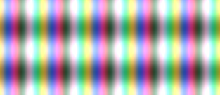

Simple fullscreen effect
In this tutorial, we create a simple animation with mimas and four, showing how to connect all the pieces together from window declaration and callbacks to timers, geometry and effects.

Note that you must run this example with luajit since plain lua is not supported by four.
Download source
Require
Every script must start by requiring lubyk to setup file paths, load some globals such as "class" or "lk" and setup auto-loading of dependencies.
Geometry
We must now prepare the geometry that we want to display. In this example, we simply create two triangles that fill the clip space (= screen).
Effect
We create a new four.Effect that will process our geometry and make something nice out of it. Apart from the uniforms declaration with default_uniforms, the rest is simply GLSL code.
Window
We create an OpenGL window with mimas.GLWindow, set the size and position.
Timer
Since our effect is a function of time, we update at 60 Hz. For this we create a timer that asks the window to update every few milliseconds.